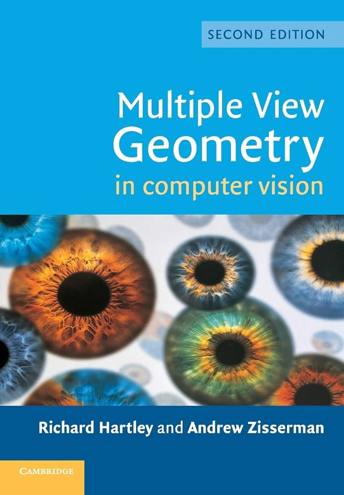
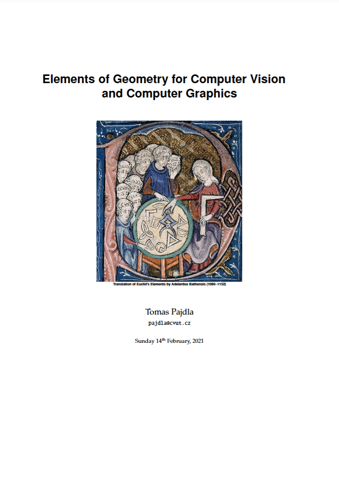

CIS5800 Machine Perception
Spring Semester 2026
Home | Slides | Syllabus | Resources
Textbooks (Optional)
The following references are recommended companions to the course. Both are freely available online.

Multiple View Geometry in Computer Vision
Core ReferenceCovers projective geometry, camera models, epipolar geometry, structure from motion, and more. The definitive reference for geometric computer vision.

Elements of Geometry for Computer Vision and Computer Graphics
Free PDFConcise treatment of projective and algebraic geometry foundations underlying camera models and multi-view reconstruction.
Python & Tools
All assignments use Python. Install from python.org or use the course conda environment (conda activate cis580). Reach out to a TA if you need help setting up.
Official Python installer for all platforms.
Array operations used throughout every homework.
Image I/O, transformations, and feature detection.
Visualizing images, point clouds, and plots.
Tensor operations and autograd basics.
Computing resources available to Penn SEAS students.
Remote access to SEAS lab machines.